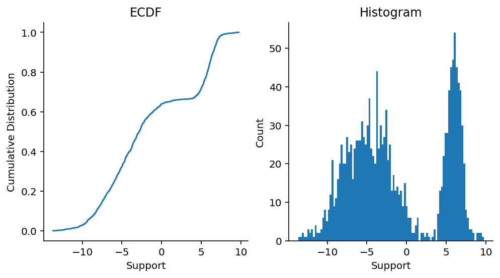
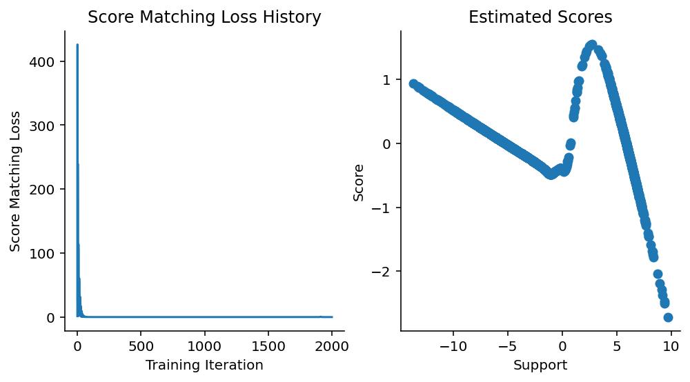
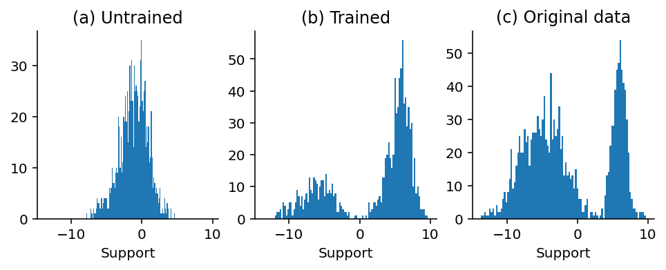
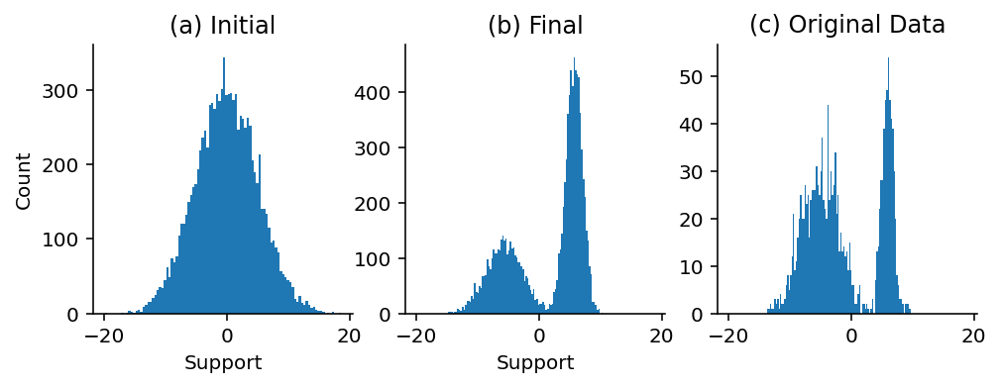

3 Langevin Dynamics
In the previous chapter, we explored how neural networks can be used to approximate the score function of a data-generating distribution. In doing so, we obtain the gradient of the log density of the data generator. How can we use this gradient information? That is what we’re going to explore in this chapter.
3.1 Sampling from a density without knowing the density
As mentioned in the first chapter, one of the key motivations in using score models is to generate new data samples from existing samples. In the case of data such as images, audio, text, and other complicated modalities, the data generating distribution can’t be written down in some analytical form. In other words, complex data (images, audio, text, etc.) come from an unknown density. So how do we draw samples from that distribution that are similar to existing samples without having access to the actual density?
That situation is exactly where having an estimator of the score function is important! By estimating the score function using existing data, we can use score function approximator to guide us to another set of coordinates in the input space, thus yielding a new sample drawn from the data-generating density.
Sampling implies not simply following gradients naïvely. In other words, we’re not merely interested in following the gradients to another high likelihood position. Rather, sampling implies the use of stochasticity. One sampling strategy that provides us with gradients and stochasticity is called “Langevin dynamics”. Let’s explore what it is over here.
3.1.1 Langevin dynamics, the algorithm
According to Yang Song’s blog,
Langevin dynamics provides an MCMC procedure to sample from a distribution \(p(x)\) using only its score function \(\nabla_x \log p(x)\). Specifically, it initializes the chain from an arbitrary prior distribution \(x_0 \sim \pi(x)\), and then iterates the following:
\[x_{i+1} \leftarrow x_i + \epsilon \nabla_x \log p(x) + \sqrt{2 \epsilon} z_i\]
where \(i = 0, 1, ... K\) and \(z_i \sim \text{Normal}(0, I)\) is a multivariate Gaussian
Let’s dissect each term in the equation above.
- \(x_i, x_{i+1}, ...\) refer to the draws that are sampled out of the procedure at each iteration \(i\).
- \(\nabla_x \log p(x)\) is the gradient of the logp of the density w.r.t. \(x\). This is exactly the score function that we’re trying to approximate with our models. This term gives us a step in the direction of the gradient.
- \(\sqrt{2 \epsilon}z_i\) is a term that injects noise into the procedure.
- \(\epsilon\) is a scaling factor, akin to a hyperparameter, that lets us control the magnitude of the step in the gradient direction.
As you probably can see, we basically start at some point \(x_i\) in the input space \(x\), use the score function to move in a direction, but done with the injection of noise into the procedure to make it a stochastic procedure. As such, the new value \(x_{i+1}\) that we draw will be a value from the distribution \(P(x)\), but biased towards higher estimated densities by nature of following the gradient.
3.1.2 Langevin dynamics, in Python
Let’s see how that one Langevin dynamics step might be translated into Python:
from jax import random, numpy as np
def langevin_dynamics_step(prev_x, score_func, epsilon, key):
"""One step of Langevin dynamics sampling."""
draw = random.normal(key)
new_x = prev_x + epsilon * score_func(prev_x) + np.sqrt(2 * epsilon) * draw
return new_x3.2 A worked example with 1D univarite Gaussians
Let’s walk through a worked example that uses 1D Normal distributions. We will start with a mixture Gaussian distribution that has two components, estimate the score function of the mixture Gaussian using a neural network, and then use the score function to do sampling of new draws from the Gaussian.
3.2.1 Train a score function model
As with before, we will train an approximate score function on this mixture Gaussian data. The model architecture will be a simple feed-forward neural network.
from score_models.training import fit
from score_models.models import FeedForwardModel1D
from score_models.losses import score_matching_loss
import optax
ffmodel = FeedForwardModel1D()
optimizer = optax.adam(learning_rate=5e-3)
updated_model, loss_history = fit(
ffmodel,
data,
score_matching_loss,
optimizer,
steps=2_000,
progress_bar=False
)Let us now diagnose whether we converged.
Code
from jax import vmap
fig, axes = plt.subplots(figsize=(8, 4), ncols=2)
plt.sca(axes[0])
plt.plot(loss_history)
plt.xlabel("Training Iteration")
plt.ylabel("Score Matching Loss")
plt.title("Score Matching Loss History")
sns.despine()
plt.sca(axes[1])
updated_model_scores = vmap(updated_model)(data)
plt.scatter(data.squeeze(), updated_model_scores.squeeze())
plt.xlabel("Support")
plt.ylabel("Score")
plt.title("Estimated Scores")
sns.despine()
From what we know about how the score function of a 2-component mixture should look like, It is safe to say that we have converged and can use the trained model. One thing should be noted here: we have explicitly avoided doing train/val/test splits here, but doing so is recommended! Just as with any other loss function for predicting classes or real numbers, we would use splitting here to determine when to stop training.
3.2.2 Sample using the score function
We are now going to attempt to use the neural network score approximator in a Langevin dynamics MCMC sampler. Langevin dynamics, being an iterative MCMC sampler, needs the use of a for-loop with carryover construct. I have taken advantage of jax.lax.scan for fast, compiled looping with carryover. In addition to that, because the operation requires parameterization of a function, Equinox is another natural choice for its implementation.
Code
from score_models.sampler import LangevinDynamicsChain
from inspect import getsource
print(getsource(LangevinDynamicsChain))class LangevinDynamicsChain(eqx.Module):
"""Langevin dynamics chain."""
gradient_func: eqx.Module
n_samples: int = 1000
epsilon: float = 5e-3
@eqx.filter_jit
def __call__(self, x, key: random.PRNGKey):
"""Callable implementation for sampling.
:param x: Data of shape (batch, :).
:param key: PRNGKey for random draws.
:returns: A tuple of final draw and historical draws."""
def langevin_step(prev_x, key):
"""Scannable langevin dynamics step.
:param prev_x: Previous value of x in langevin dynamics step.
:param key: PRNGKey for random draws.
:returns: A tuple of new x and previous x.
"""
draw = random.normal(key, shape=x.shape)
new_x = (
prev_x
+ self.epsilon * vmap(self.gradient_func)(prev_x)
+ np.sqrt(2 * self.epsilon) * draw
)
return new_x, prev_x
keys = random.split(key, self.n_samples)
final_xs, xs = lax.scan(langevin_step, init=x, xs=keys)
return final_xs, np.vstack(xs)
3.2.3 Sample one chain
Let’s run one chain of the Langevin dynamics sampler to see what the samples from one chain look like. For comparison, we will show what the sampler draws look like when we have an untrained model vs. a trained model, and so we will have two samplers instantiated as well.
trained_model_sampler = LangevinDynamicsChain(gradient_func=updated_model, epsilon=5e-1)
key = random.PRNGKey(55)
final, trained_samples = trained_model_sampler(np.array([[2.0]]), key)
untrained_model_sampler = LangevinDynamicsChain(gradient_func=ffmodel, epsilon=5e-1)
final, untrained_samples = untrained_model_sampler(np.array([[2.0]]), key)Now that the Langevin dynamics samplers have been instantiated and run for one chain, let’s see what our “draws” look like.
Code
fig, axes = plt.subplots(figsize=(8, 2.5), ncols=3, sharex=True)
plt.sca(axes[0])
plt.hist(onp.array(untrained_samples), bins=100)
plt.title("(a) Untrained")
plt.xlabel("Support")
plt.sca(axes[1])
plt.hist(onp.array(trained_samples), bins=100)
plt.title("(b) Trained")
plt.xlabel("Support")
plt.sca(axes[2])
plt.hist(onp.array(data), bins=100)
plt.title("(c) Original data")
plt.xlabel("Support")
sns.despine()
That looks amazing! It looks abundantly clear to me that with one chain, we can draw new samples from our mixture distribution without needing to know the mixture distribution parameters! There isn’t perfect correspondence, but for the purposes of drawing new samples that look like existing ones, an approximate model appears to be good enough.
3.2.4 Multi-Chain Sampling
We are now going to attempt multi-chain sampling! Let us instantiate 1,000 starter points drawn randomly from a Gaussian and then run the sampler for 200 steps. Note here that by designing our single chain sampler to be called on a single starter point (of the right shape) and a pseudorandom number generator key, we can vmap the sampling routine over multiple starter points and keys rather trivially.
key = random.PRNGKey(49)
n_particles = 10_000
starter_points = random.normal(key, shape=(n_particles, 1, 1)) * 5
starter_keys = random.split(key, n_particles)
trained_model_sampler = LangevinDynamicsChain(
gradient_func=updated_model, n_samples=100, epsilon=5e-1
)
final, trained_samples = vmap(trained_model_sampler)(starter_points, starter_keys)Code
fig, axes = plt.subplots(figsize=(8, 2.5), nrows=1, ncols=3, sharex=True)
plt.sca(axes[0])
plt.xlabel("Support")
plt.title("(a) Initial")
plt.ylabel("Count")
plt.hist(onp.array(starter_points.flatten()), bins=100)
plt.sca(axes[1])
plt.xlabel("Support")
plt.title("(b) Final")
plt.hist(onp.array(final.flatten()), bins=100)
plt.sca(axes[2])
plt.hist(onp.array(data), bins=100)
plt.title("(c) Original Data")
sns.despine()
Figure 3.4 looks quite reasonable! Our original draws from a relatively wide Gaussian get split up into both component distribution which is encouraging here. This is encouraging!
One thing I hope is evident here is the vmap-ing of the the sampler over multiple starting points. For me, that is one of the elegant things about JAX. With vmap, lax.scan, and other primitives in place, as long as we can “stage out” the elementary units of computation by implementing them as callables (or functions), we have a very clear path to incorporating them in loopy constructs such as vmap and lax.scan, and JIT-compiling them using jit.